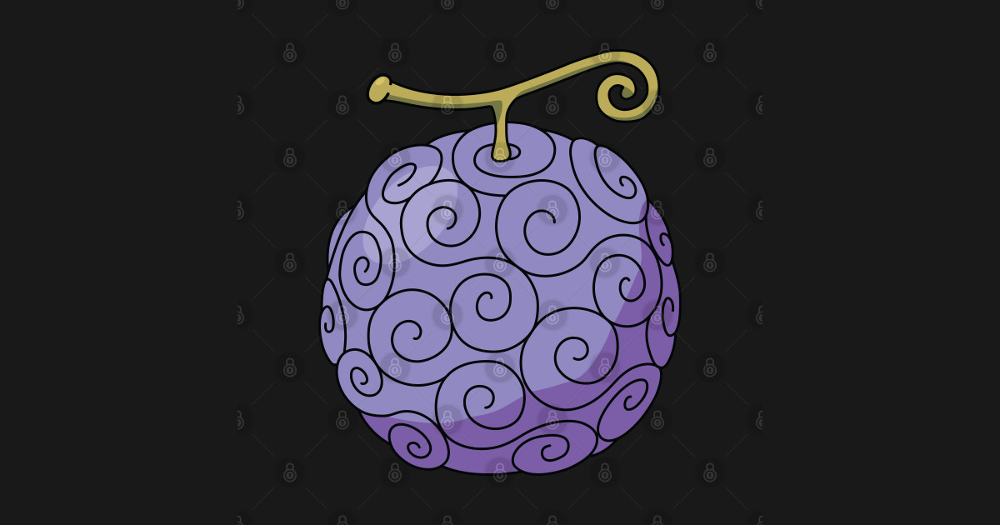

Gomu Gomu no Mi (Fruta da Borracha)
Tipo: Paramecia
Quem consumiu: Monkey D. Luffy
Ainda bem jovem, Luffy comeu acidentalmente a Gomu Gomu no Mi, sem saber do que se tratava a fruta. Seu corpo acabou ganhando as propriedades da borracha, o que, junto a muito treino e à criatividade de Luffy, lhe proporcionou recursos de defesa e combate incríveis. O corpo de borracha de Luffy é imune a diversos ataques, mesmo os mais violentos, como balas, balas de canhão ou até mesmo grandes quedas. Além disso, seu corpo de borracha é um isolante natural a ataques elétricos. Já a possibilidade de esticar qualquer parte do seu corpo fez com que o pirata pudesse alterar seu tamanho como um todo ou por partes, para aumentar a intensidade, o alcance e a força de seus ataques. Mas as possibilidades encontradas por Luffy em seus poderes foram além. O pirata consegue esticar seus vasos sanguíneos para ganhar força e velocidade a partir do aumento da velocidade do fluxo de seu sangue.
Hana Hana no Mi (Fruta da Flor)
Tipo: Paramecia
Quem consumiu: Nico Robin
A Hana Hana no Mi dá aquele que a consome o poder de replicar partes de seu corpo em qualquer superfície, seja um objeto inanimado, seja um ser vivo. Isso proporciona ao usuário a possibilidade de lutar contra vários oponentes ao mesmo tempo a partir de seus diferentes membros germinados. O fato de apenas Robin saber onde cada parte replicada irá brotar coloca a seu favor ainda este fator surpresa, extremamente útil tanto para atacar mesmo os mais rápidos adversários quanto para se defender. Olhos e ouvidos também podem ser replicados em diferentes lugares, o que faz do poder desta fruta um recurso bem útil também para obtenção de informações sigilosas e outros trabalhos de espionagem ou vigilância.

Mera Mera no Mi (Fruta do Fogo)
Tipo: Logia
Quem consumiu: Portgas D. Ace e, posteriormente, Sabo
Esta Akuma no Mi dá a seu usuário a habilidade de criar e controlar fogo, e de transformar seu próprio corpo em fogo. Este recurso possibilita diferentes formas de ataques e defesa, ou até mesmo uma mistura dos dois ao mesmo tempo. O usuário pode, por exemplo, se transformar em chamas para evitar ser atingido e ainda queimar seu adversário no processo. Contudo, o poder desta fruta encontra resistência contra outros usuários de Akuma no Mi Logia, que também permitem a transformação em algum tipo de elemento da natureza. Foi o caso com fumaça e gelo, cuja colisão de elementos cancelou os ataques de ambos. Além disso, o usuário da Mera Mera no Mi pode ser atingido e derrotado por aquele que consumir a Magu Magu no Mi, visto que magma é superior a fogo.
Magu Magu no Mi
Tipo: Logia
Quem consumiu: Almirante Sakazuki
Permite que seu usuário transforme seu próprio corpo em puro magma, além de poder criar e controlar magma como desejar. O calor do magma criado é capaz de vaporizar um iceberg instantaneamente e ferver a água ao seu redor. Contudo, o Almirante Sakazuki pode ser atingido por alguns tipos de Haki e pelos poderes de Marshall D. Teach, usuário da Yami Yami no Mi, fruta que lhe dá o poder de produzir e controlar trevas.
Yami Yami no Mi (Fruta da Escuridão)
Tipo: Logia
Quem consumiu: Marshall D. Teach
Aquele que consome a Yami Yami no Mi ganha o incrível e sombrio poder de criar e controlar trevas das forma como quiser. Considerada única mesmo para um tipo Logia, esta fruta é vista como a mais maligna entre as Akuma no Mi. A escuridão criada pelo usuário envolve o oponente como um vazio capaz de devorar e esmagar, bem como absorver diferentes tipos de ataques. Além disso, a escuridão pode criar uma espécia de vórtex, similar a um buraco negro, que absorve tudo ao seu redor. Mas a Yami Yami no Mi tem ainda outro poder igualmente temido: ela pode anular os poderes de outras Akuma no Mi apenas com um toque de seu usuário.